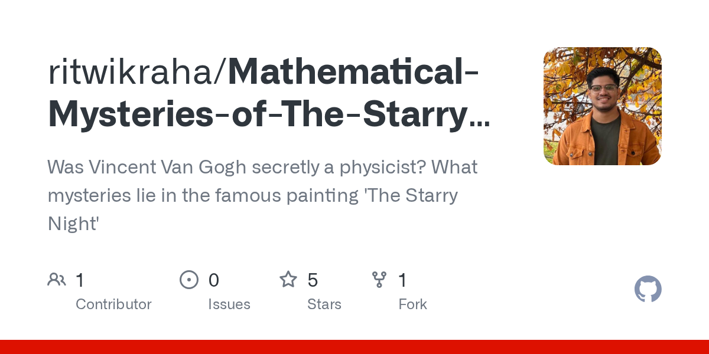

Mathematical Mysteries of the Starry Night
An answer to a curiousity long fostered in a brain that can attempt to appreciate if not understand art.
Modelling Gravity in a world that Van Gogh saw.
When Vincent van Gogh painted The Starry Night in 1889, looking out from the window of his asylum, I believe he experienced some form of epiphany whereby some incredible secret of the unknown cosmos presented itself to him.

For decades, art historians viewed these iconic swirls as mere representations of Van Gogh’s turbulent mental state. But recently, physicists noticed something startling. The patterns in the brushstrokes—specifically the way the brightness fluctuates across the canvas—closely mimic the mathematical structures of real-world fluid turbulence.
In my own way, I have always been fascinated with this and even did some preliminary explorations in my undergrad days.

Needless to say, because of my own shortcomings and the absence of vibe-coding I could only explore so much as creating cyclic graphs from the illumination pattern.
But what if the universe actually worked the way Van Gogh painted it? What if gravity wasn’t a smooth pull, but a turbulent, swirling ocean?
To understand the chaos, we must first understand the order.
Standard Gravity
Our current understanding of solar systems relies on stability. Isaac Newton described gravity as a universal force of attraction that is predictable and smooth.
In a standard planetary system, a planet is constantly falling toward its star. However, it also has tremendous forward momentum. The resulting orbit is a perfect balance between the star trying to pull the planet in, and the planet trying to fly off in a straight line.
In the interactive simulation below, we see a simple, orderly system. The blue arrow represents the gravitational force vector—the direction and intensity with which the star is pulling the planet. Notice how the arrow always points directly to the center, and gets longer (stronger pull) when the planet is closer.
A simple gravitational system.
Standard Gravity: The force vector (blue arrow) always points smoothly toward the star.
Keppler’s Laws of Motion
Because gravity is smooth and central, planetary motion follows incredibly precise rules discovered by Johannes Kepler in the early 17th century. These laws are the bedrock of orbital mechanics.
- The Law of Ellipses: All planets move in elliptical orbits, with the sun at one focus.
- The Law of Equal Areas: A line that connects a planet to the sun sweeps out equal areas in equal times. (This means planets speed up when closer to the star and slow down when further away).
- The Law of Harmonies: The square of the orbital period of a planet is directly proportional to the cube of the semi-major axis of its orbit.
Expressed mathematically, the third law looks like this:
\[T^2 = \frac{4\pi^2}{GM} a^3\]
Where \(T\) is the orbital period, \(a\) is the average distance (semi-major axis), \(G\) is the gravitational constant, and \(M\) is the mass of the star.
Because of these laws, we can have complex, stable systems with multiple planets. They don’t collide because the smooth gravitational field keeps them in their predictable “lanes.”
A multi-planet gravitational system
A stable Keplerian system. Multiple planets maintain distinct orbits because the central force is uniform.
Modelling turbulent gravity
Now, back to Van Gogh. The patterns in The Starry Night align with a theory proposed by mathematician Andrey Kolmogorov in 1941 regarding fluid turbulence.
Kolmogorov described an “energy cascade.” Imagine stirring a cup of coffee. You create large swirls (eddies). Those large swirls become unstable and break into smaller swirls, which break into even smaller ones, until the energy is lost to heat.
Kolmogorov found a specific mathematical relationship defining how much energy exists at different sizes of these swirls. The formula for the energy spectrum \(E(k)\) is:
\[E(k) = C \epsilon^{2/3} k^{-5/3}\]
Here, \(k\) relates to the size of the swirl (wavenumber), and the key feature is the \(-5/3\) exponent. Amazingly, Van Gogh’s brushstrokes scale according to this exact ratio.
A Universe of Turbulent Gravity
If we take Van Gogh’s vision literally and apply Kolmogorov’s turbulence to gravity, the universe changes drastically.
Spacetime would no longer be a smooth slope curving toward a star. It would be a churning ocean of gravitational “eddies.”
In such a system:
- The force vector would not always point at the star. As a planet moves through gravitational eddies, it would experience sideways shoves and sudden drops in pull.
- There are no stable lanes. The smooth mathematical certainty of Kepler’s laws evaporates.
To be perfectly accurate, there is no formal physical theory called “Kolmogorov Gravity.” What we are doing in this thought experiment is a mathematical synthesis: we are taking the established laws of Newtonian Gravity and perturbing them using a vector field defined by the Kolmogorov 1941 (K41) theory of fluid turbulence.
It is a beautiful way to visualize how a chaotic energy cascade would warp the fabric of spacetime.
The Mathematics of “Turbulent Gravity”
The foundation of Kolmogorov’s theory is the energy spectrum equation, which describes how kinetic energy is distributed across eddies of different sizes (wavenumbers, \(k\)):
\[E(k) = C \epsilon^{2/3} k^{-5/3}\]
To apply this to a gravitational field, we need to convert that energy \(E(k)\) into a force or acceleration perturbation amplitude, \(A(k)\). Because kinetic energy is proportional to velocity squared (\(E \propto v^2\)), the amplitude of the vector perturbation at a specific wavenumber scales to the square root of the energy spectrum:
\[A(k) \propto \sqrt{k^{-5/3}} = k^{-5/6}\]
This \(k^{-5/6}\) relationship is the mathematical heart of the widget.
Finally, we define the total gravitational vector field, \(\vec{g}_{total}\), experienced by the planet at position \(\vec{r}\) and time \(t\). It is the sum of the smooth Newtonian central force and the turbulent spatial perturbation \(\vec{T}\):
\[\vec{g}_{total} = -\frac{GM}{|\vec{r}|^2} \hat{r} + \vec{T}(\vec{r}, t, k)\]
To mimic the swirling nature of fluid dynamics in 2D space without running a heavy Navier-Stokes physics engine, \(\vec{T}\) is modeled using out-of-phase trigonometric harmonics, scaled by the wavenumber \(k\) and the amplitude \(A(k)\):
\[\vec{T}(\vec{r}, t, k) = A(k) \begin{bmatrix} \sin(k r_x + \omega t) \cos(1.5 k r_y + \omega t) \\ \cos(k r_y + \omega t) \sin(1.5 k r_x - \omega t) \end{bmatrix}\]
The Visual Result
Because of the \(k^{-5/6}\) amplitude rule, the slider behaves counter-intuitively—but mathematically perfectly:
- Low Wavenumber (e.g., 0.5): The eddies are spatially massive, but because \(k\) is small, the amplitude is very high. The planet gets caught in massive, powerful spatial tides that drastically warp its orbit.
- High Wavenumber (e.g., 4.0): The space fractures into high-frequency, tiny micro-swirls. However, because \(k\) is large, the amplitude drops significantly. The planet “jitters” through the field but maintains its overall circular trajectory much longer because the chaotic forces are much weaker.
In the final simulation below, we model this “Van Gogh Gravity.” We take the standard central pull of the star and add “turbulent noise” to it based on the planet’s position. The force vectors (the faint white arrows) no longer point straight to the center; they wiggle and twist chaotically.
Watch what happens to the planetary orbits.
A gravitational system that swirls
Turbulent Gravity: Gravitational "eddies" perturb the force vectors. Keplerian orbits are impossible; planets are eventually ejected or consumed.
The result is beautiful chaos. The planets cannot maintain stable ellipses. They are buffeted by gravitational winds, their orbits becoming unpredictable squiggles until they are either flung into deep space or crash into the star.
Van Gogh was not a physicist. And thanks the god for that. He was able to see and capture what few men have seen and experienced in human history. It is a coincidence that his art can be expressed as an exact form of turbulence.
However turbulence is not a favorable phenemenon when creating forces of nature that render our universe heterogeneous.
It is however for the more curios minds amongst us to wonder how our universe’s simulation is coded. And how far we are from recreating it?